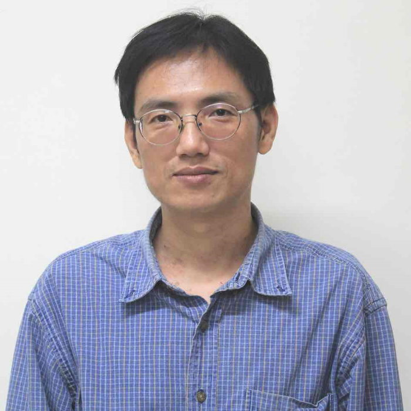

{% extends "base.html" %}
{% block content %}
    {% comment %}
    http://people.cs.nctu.edu.tw/~kcw/
    {% endcomment %}
    <div class="ui stackable grid" style="margin-top:75px">
        <div class="centered row">
            <div class="four wide column">
                <div class="ui segment">
                    
                    <h3 class="ui header">
						Yih-Lang Li 李 毅 郎
                        <div class="sub header">Professor</div>
                    </h3>
                    <div class="ui list">
                        <a class="item">
                            <i class="top aligned right triangle icon"></i>

                            <div class="content">
                                <div class="header">School</div>
                                <div class="description">National Chiao Tung University</div>
                            </div>
                        </a>
                        <a class="item">
                            <i class="top aligned right triangle icon"></i>

                            <div class="content">
                                <div class="header">Department</div>
                                <div class="description">Department of Computer Science</div>
                            </div>
                        </a>
                        <a class="item">
                            <i class="top aligned right triangle icon"></i>

                            <div class="content">
                                <div class="header">Phone</div>
                                <div class="description">+886-3-5131364</div>
                            </div>
                        </a>
                        <a class="item">
                            <i class="top aligned right triangle icon"></i>

                            <div class="content">
                                <div class="header">Fax</div>
                                <div class="description">+886-3-5721490</div>
                            </div>
                        </a>
                        <a class="item">
                            <i class="top aligned right triangle icon"></i>

                            <div class="content">
                                <div class="header">Email</div>
                                <div class="description">ylli@cs.nctu.edu.tw</div>
                            </div>
                        </a>
                    </div>
                </div>
            </div>
            <div class="ten wide column">
                <div class="ui segment">
                    <a class="ui teal left ribbon label">Education</a>

                    <div class="ui bulleted list">
                        <a class="item"> Ph.D. Computer Science and Information Engineering, National Tsing-Hua University,  Parallel and Distributed Logic and Fault Simulation</a>
                        <a class="item">M.S. Computer Science and Information Engineering, National Tsing-Hua University, The Greedy Zone Router</a>
                        <a class="item">B.S. Nuclear Engineering, National Tsing-Hua University</a>
                    </div>
                    <a class="ui teal left ribbon label">Experiences</a>

                    <div class="ui bulleted list">
						<a class="item">Part-time Lecturer, National Tsing-Hua University (09/1992 – 12/1994)</a>
						<a class="item">Consultant, Top Taiwan Venture Capital (1998 ~ 1999)</a>
						<a class="item">Software Engineer, Springsoft Corp. (10/1995 – 06/1996)</a>
						<a class="item">Senior Engineer, Springsoft Corp. (06/1998 – 06/2001)</a>
						<a class="item">Associate Manager, Springsoft Corp. (06/2001 – 01/2003)</a>
						<a class="item">Assistant Professor, Department of Computer and Information Science, NCTU (02/2003 – 07/2009)</a>
						<a class="item">Associate Professor, Department of Computer and Information Science, NCTU (08/2009 – 07/2013)</a>
						<a class="item">Director of Alumni Organization of Computer Science Department at National Tsing Hua University (2011 ~ )</a>
						<a class="item">Independent Director of Board of Directors, AMICCOM (03/2012 ~ )</a>
						<a class="item">Compensation Committee Member, AMICCOM (03/2012~ )</a>
						<a class="item">Professor, Department of Computer and Information Science, NCTU (08/2013 ~ )</a>
                    </div>
                    <a class="ui teal left ribbon label">Research Interests</a>
                    <div class="ui bulleted list">
						<a class="item">Electrical Design Automation (EDA) for Nanometer Design</a>
						<a class="item">Parallel Computing on multi-cores and many-cores platforms</a>
                    </div>
                    <a class="ui teal left ribbon label">Ongoing Research Projects</a>
                    <div class="ui bulleted list">
						<a class="item">Post-Layout Verification and Optimization Platform, by NSC, 2005 ~ 2008.</a>
						<a class="item">Reliable Interconnect Optimization Considering Crosstalk and Optical Proximity Correction, by NSC, 2006 ~ 2009.</a>
						<a class="item">Gridless Full-Chip Routing with Nanometer Design Rules , by AnaGlobe Inc. 2006 ~ 2008</a>
                    </div>
                    <a href="/ylli_research/" class="ui right floated primary button">
                        研究主題介紹
                        <i class="right chevron icon"></i>
                    </a>
                </div>
                <div class="ui segment">
                </div>
            </div>
        </div>
    </div>

{% endblock %}
